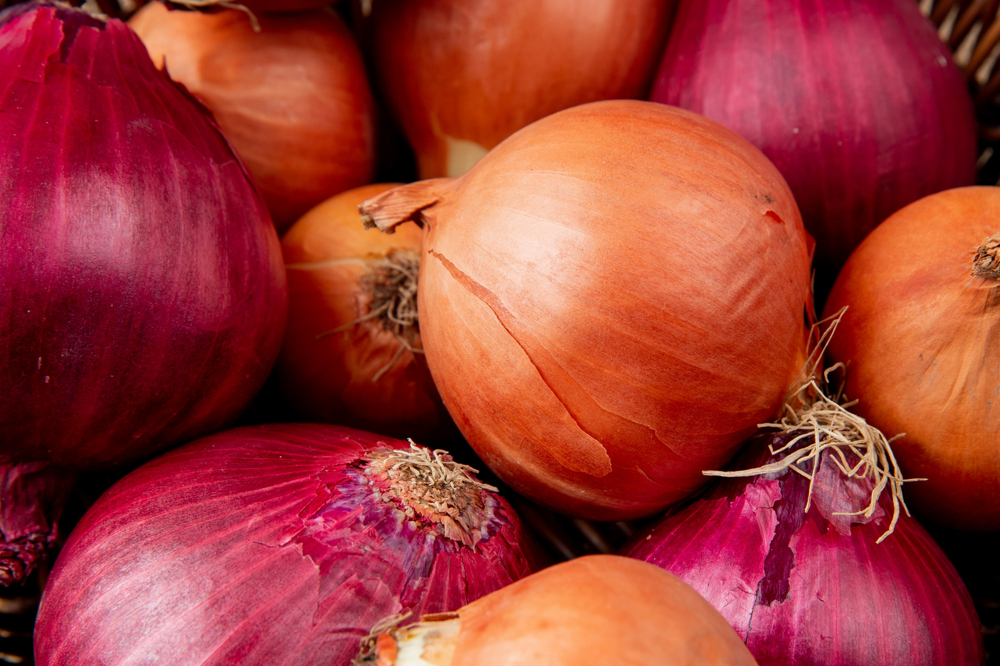

cebolla | Que variedad utilizar en las recetas
INTI COCINA, Dec 1 - 2022
una variedad de cebolla para cada ocasion
Leer Mas
RECETAS SALUDABLES PARA PROGRAMADORES
una variedad de cebolla para cada ocasion
Leer Masuna variedad de cebolla para cada ocasion
Leer Mas